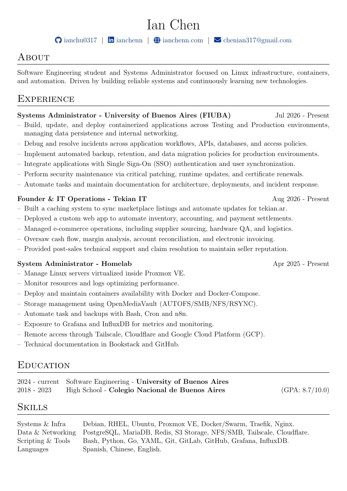
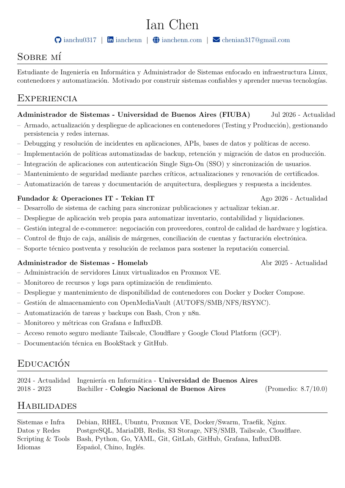

English

Administrador de sistemas en la UBA y estudiante de Ingeniería en Informática. Trabajo con infraestructura, contenedores y sistemas Linux, con foco en automatización y estabilidad. También llevo adelante mi emprendimiento Tekian IT, y mantengo mi propio homelab.
Systems Administrator at the University of Buenos Aires and Software Engineering student. I work with infrastructure, containers, and Linux systems, focusing on automation and reliability. I also run my own business Tekian IT, and maintain a personal homelab.

